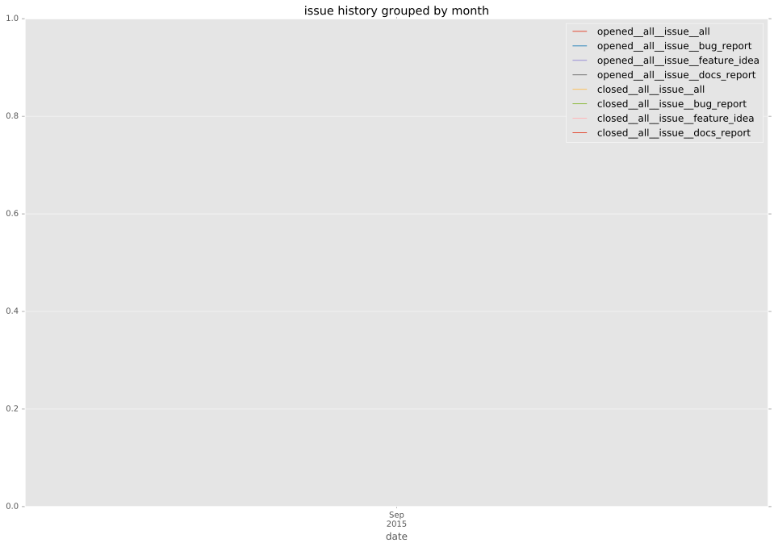
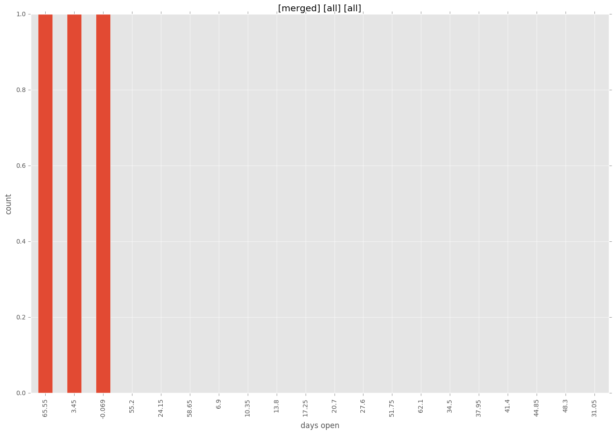
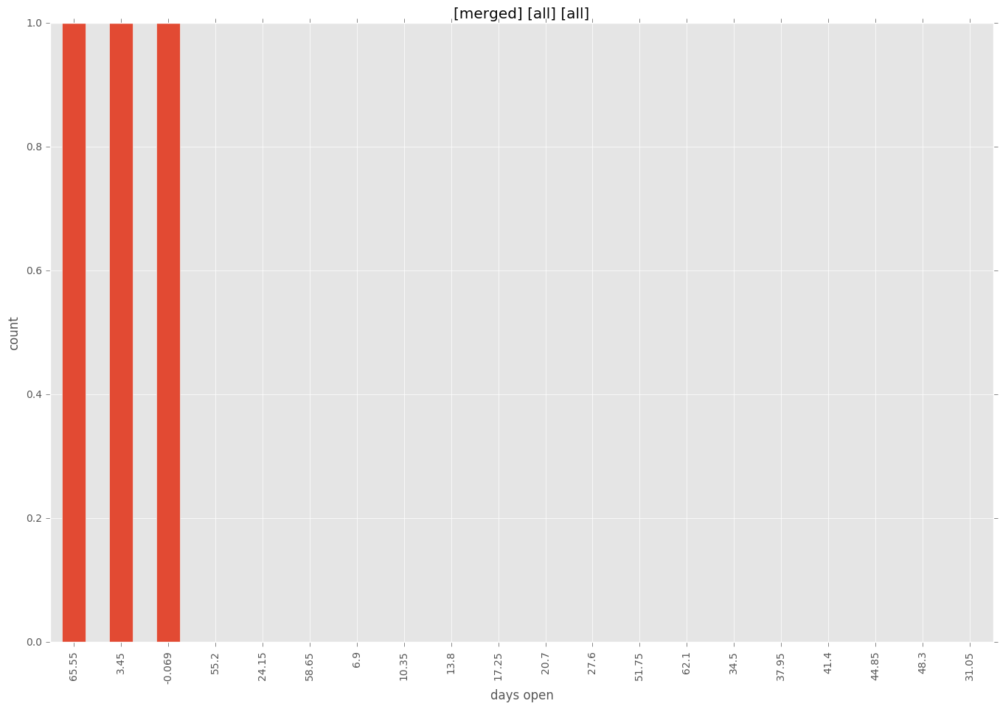

total issue counts
feature pull request: 1
pullrequest: 5
bugfix pull request: 3
issue: 1
new plugin: 1
bug report: 1
issue history

days open by issue type
bugfix pull request
count: 4
std: 39.8371685741
min: 0
max: 69
median: 34.5
mean: 34.5
all
count: 8
std: 75.3468171666
min: 0
max: 217
median: 4.5
mean: 46.0
pullrequest
count: 0
std: nan
min: nan
max: nan
median: nan
mean: nan
feature pull request
count: 1
std: nan
min: 217
max: 217
median: 217.0
mean: 217.0
issue
count: 0
std: nan
min: nan
max: nan
median: nan
mean: nan
new plugin
count: 2
std: 0.0
min: 4
max: 4
median: 4.0
mean: 4.0
bug report
count: 1
std: nan
min: 5
max: 5
median: 5.0
mean: 5.0
closures grouped by total days open


 
